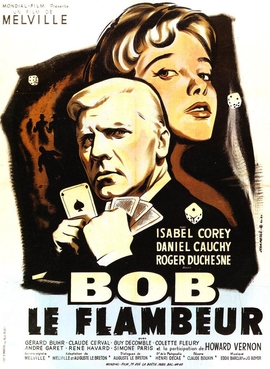

Jean-Pierre Melville
1956
98 minutes
This is a pretty great film noir heist film by the master, Jean-Pierre Melville. Much of it is shot in your favorite neighborhood in Paris, Pigalle, which is essentially the red light district and the home of the Moulin Rouge. You've never been in the Moulin Rouge, but you had a hotel in this neighborhood and spent a lot of happy nights in bars nearby, including Pigalle Country Club.
The name of this film basically translates to "Bob the Gambler", and the title character endearingly fucks up, getting distracted by gambling like some kind of goddamned degenerate. He misses the ill-fated heist and the ensuing shoot-out because he's late to the scene, and incidentally ends up surviving the film with a bunch of loot while being likely to beat the rap for the botched heist since he didn't actually take part in the heist itself, which is a pretty hilarious and novel way for a heist film to end for the protagonist.
You're not much of a gambler yourself. You're frugal by nature, and as a mathematician one of your specialties was probability theory, which gave you a lot of insight into why most casino games aren't worth playing. Even for the ones with a more realistic way of earning money, the culture around casinos and gambling and games of chance seems rather low and not terribly entertaining, so you've always avoided them. It also didn't help that your father was a shrink who was studying the ties between gambling addiction and ADHD when he got his degree, so you got a double dose of distaste for all things gambling from exposure to this. The cards were stacked against you taking much of an interest in these matters except in a purely academic way.
Time to choose something different: